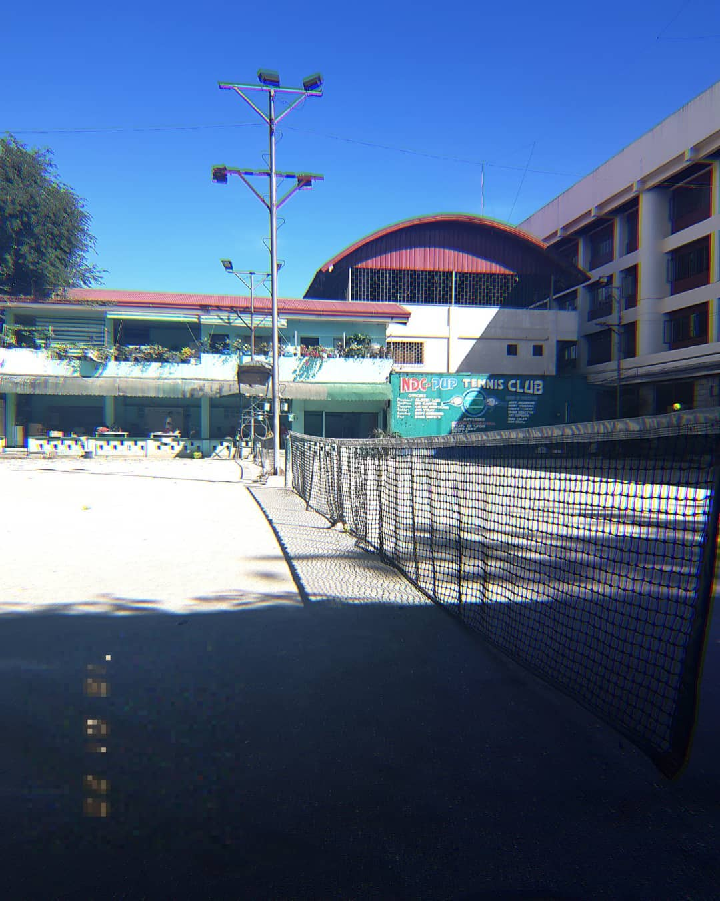

The NDC Tennis Court is used for training, practice, and local tennis competitions. It provides a venue for both student-athletes and non-athletes to develop their tennis skills and engage in friendly matches.
The tennis court is utilized for physical education classes, where students learn the basics of tennis, along with the value of sportsmanship and teamwork.